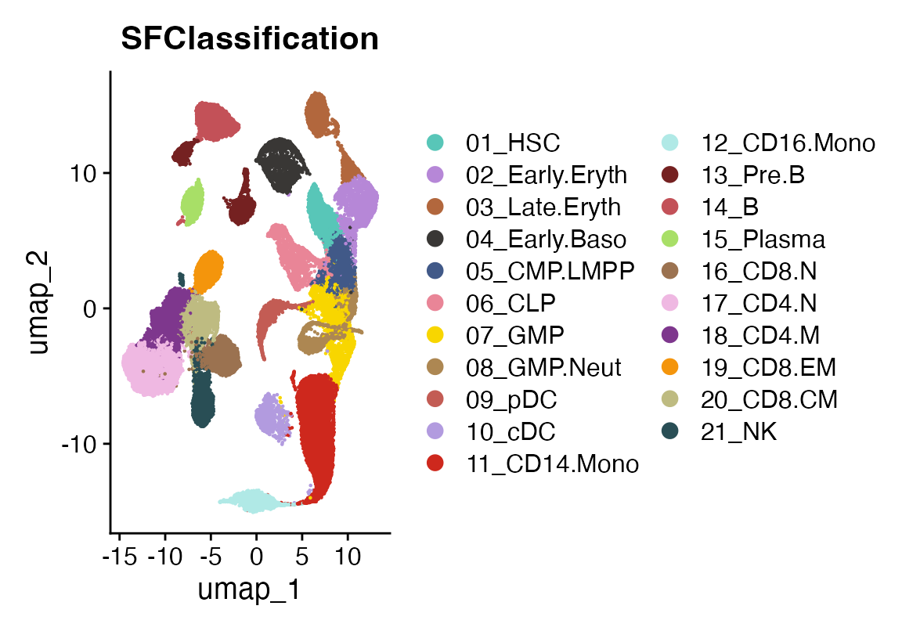
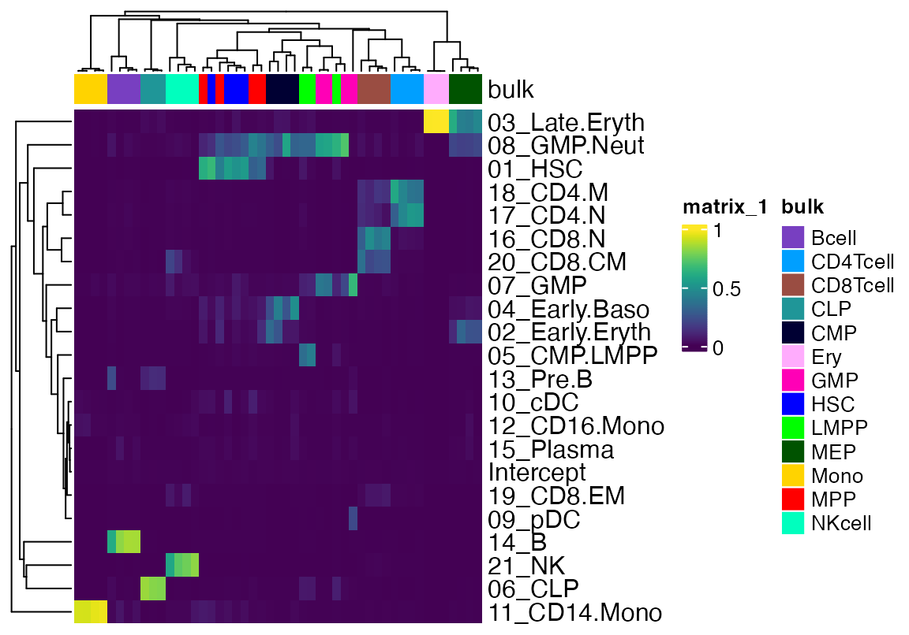
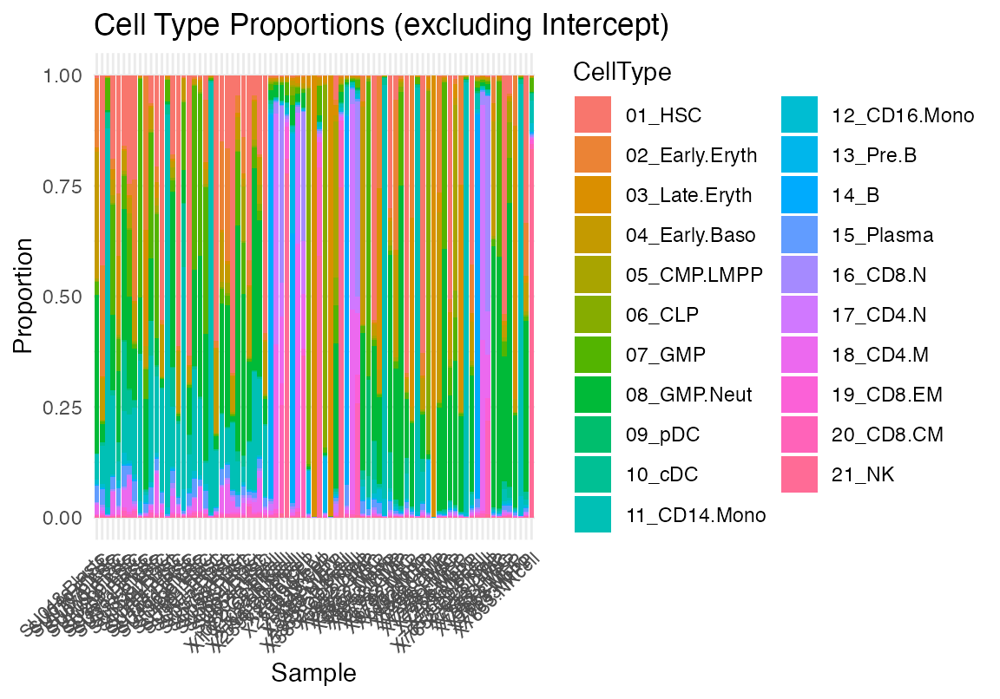
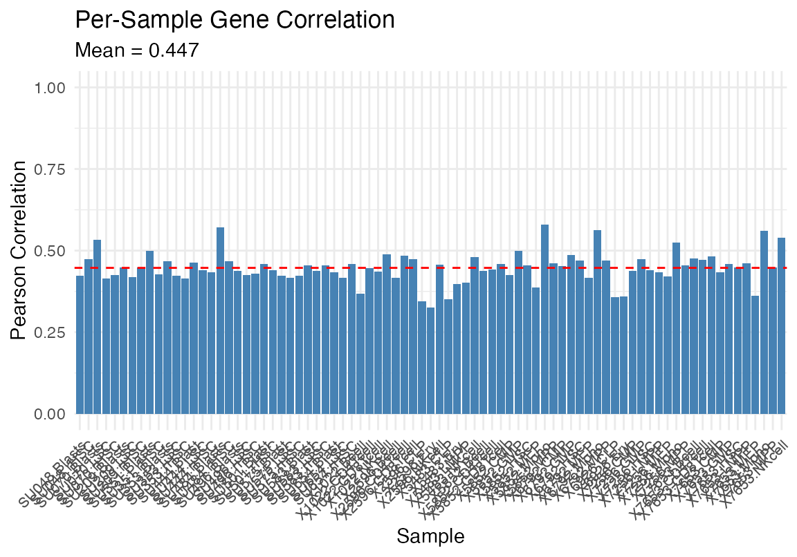
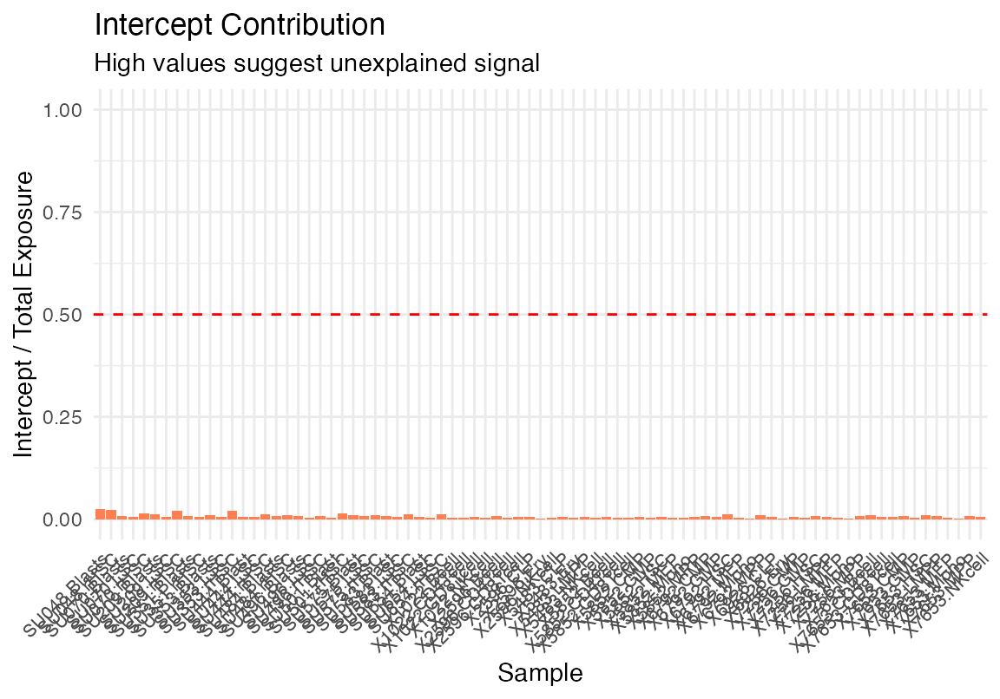

How to deconvolute bulk RNAseq
2025-10-13
Deconvolute.RmdLoad a seurat object
This is an atlas of healthy bone marrow celltypes taken from:
Granja JM, Klemm S, McGinnis LM, Kathiria AS, Mezger A, Corces MR, Parks B, Gars E, Liedtke M, Zheng GXY, Chang HY, Majeti R, Greenleaf WJ. Single-cell multiomic analysis identifies regulatory programs in mixed-phenotype acute leukemia. Nat Biotechnol. 2019 Dec;37(12):1458-1465. doi: 10.1038/s41587-019-0332-7. Epub 2019 Dec 2. PMID: 31792411; PMCID: PMC7258684.
These data are not included in the viewmastR package.
suppressPackageStartupMessages({library(Seurat)
library(viewmastR)
library(magrittr)
library(viridis)
library(ComplexHeatmap)})
# Load single-cell data
sc_data <- readRDS(seurat_object_loc)
DimPlot(sc_data, group.by = "SFClassification", cols = sc_data@misc$colors)
Now we pseudobulk the samples to get a matrix of “signatures”
# Extract normalized counts and cell type labels
counts <- GetAssayData(sc_data, layer = "data") # log-normalized
cell_types <- sc_data$SFClassification
# Aggregate by cell type and create signatures
signatures <- sapply(unique(cell_types), function(ct) {
cells <- which(cell_types == ct)
rowMeans(expm1(counts[, cells])) # expm1 reverses log1p normalization
})Load bulk data
Next we load data released from the same publication that has bulk RNA seq from sorted populations of bone marrow cells. These data are included in the viewmastR package.
# Load bulk counts and gene lengths
bulk_counts <- system.file("extdata", "deconvolute", "GSE74246_RNAseq_All_Counts.txt", package = "viewmastR")
bulk_counts <- read.csv(bulk_counts, sep = "\t")
rn <- bulk_counts$X_TranscriptID
bulk_counts$X_TranscriptID<- NULL
bulk_counts <- as.matrix(bulk_counts)
rownames(bulk_counts) <- rn
gene_info <- read.table(system.file("extdata", "deconvolute", "geneWeights_withSymbol.tsv", package = "viewmastR"), header = TRUE)
rownames(gene_info) <- gene_info$symbolFeature parity
Now we make sure the features are the same across all the data used for deconvolution. Check the dimensions to amake sure they match. We have 21 celltypes and 81 bulk samples. Here we find 18,879 features in common across all the inputs
# Ensure same genes
common_genes <- intersect(intersect(rownames(signatures), rownames(bulk_counts)), gene_info$symbol)
signatures <- signatures[common_genes, ]
bulk_counts <- bulk_counts[common_genes, ]
# Get gene lengths
gene_lengths <- gene_info[common_genes, "length"]
gene_weights <- gene_info[common_genes, "weight"]
dim(signatures)## [1] 18879 21
dim(bulk_counts)## [1] 18879 81
length(gene_lengths)## [1] 18879Deconvolute
You can read more on our implementation below, but here is a minimally working example using default parameters.
result <- deconvolve_bulk(
signatures = signatures,
bulk_counts = bulk_counts,
gene_lengths = gene_lengths,
gene_weights = gene_weights,
max_iter = 3000
)Visualize
We will remove some of the bulk data that contains tumor cells or recombinant HSC for simplicity. In this case we will also plot the Intercept so one can get a sense of the degree of signal that is unaccounted for.
data <- as.matrix(result$proportions_with_intercept)
data <- data[,!(grepl("LSC", colnames(data)) | grepl("rHSC", colnames(data)) | grepl("Blast", colnames(data)))]
cols <- pals::glasbey(13)
names(cols) <- unique(strsplit(colnames(data), "\\.") %>% sapply("[[", 2))
cola <- HeatmapAnnotation(bulk = strsplit(colnames(data), "\\.") %>% sapply("[[", 2), col = list(bulk=cols))
Heatmap(data, top_annotation = cola, show_column_names = F, col = viridis(100))
One can also use our build in plotting functions
plot_deconvolution(result)


Mathematical Summary
Inputs: Signatures S (G×C), bulk counts
k (G×N), gene lengths L, weights
w
Output: Exposures E (C×N) = cell type
abundances
Model
Forward Pass
q = [S | 1/G] × [E; intercept] # Molecules
ŷ[g,n] = q[g,n] × (L[g] / insert_size) # Reads
k[g,n] ~ Poisson(ŷ[g,n]) # Observed countsOptimization
Two phases: 1. NULL: Freeze E≈0, optimize intercept only → baseline 2. Full: Re-init E, optimize all parameters with Adam (lr=0.01)
Convergence: Stop when Δloss/loss < 10⁻⁶ AND Δsparsity < 10⁻⁴
Output
Exposures: E[c,n] = exp(log_E[c,n]) # Cell-equivalents
Proportions: P[c,n] = E[c,n] / Σ_c E[c,n] # Fractions (sum to 1)
Quality: intercept / (Σ E + intercept) # <0.1 = good fitKey Parameters
| Parameter | Default | Range | Purpose |
|---|---|---|---|
l1_lambda |
0 | 0-10 | Sparsity (1=moderate, 5=strong) |
l2_lambda |
0 | 0-10 | Stability (prevents extreme values) |
learning_rate |
0.01 | 0.001-0.1 | Optimization step size |
insert_size |
500 | 150-500 | Fragment length correction |
Recommendation: Start with defaults (no
regularization). Add l1_lambda=0.5-2 only if too many cell
types.